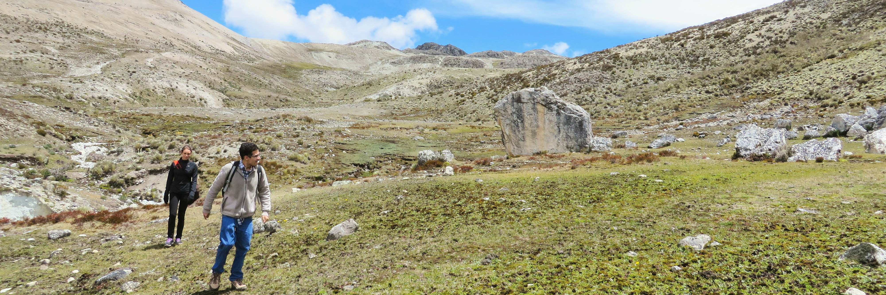

Coming from Venezuela
Coming from Venezuela: The not so easy part.
Moving to Germany after living in Venezuela, with all the madness going on right there, has definitely taught me a bunch of things. With that background, a heavy pack comes in:
Enjoying life and trying to pursue your dreams gets harder when you know your family and friends are still there, suffering the consequences of a terrible ideology stuck in power.
After living some time abroad, going through ups and downs is pretty common. Here I would like share with you some struggles I experienced from time to time and how I cope up with them.
Enjoying life
Being away makes you wonder if you’re being selfish, makes you double think if you just escaped and now you forgot where you came from, like you’re living someone else’s life. Even if someone makes you feel that way, the reality is not as simple as that. Those of us living abroad, coming from a country such as Venezuela, have an extra pressure on our backs that some others simply can’t understand. Even if you’re a young person you have to plan each step in advance, save money and make sure you start building a stable future for you and your family. Remember that you’re now in a different place, you can’t live exactly as you were living before, make sure to appreciate those things, be kind to yourself and don’t get stuck in the past. On the other hand, never forget all you’ve learned so far and what’s your main goal after all.
Connecting with people
I usually don’t like to talk much about the current situation in my home country. I believe that it makes harder to connect with people when you expose the reality from where you come from. Even when you look just like everyone else, what you have lived there is something pretty hard to be felt by others, and somehow, creates more distance. I just try to skip it and stick to the good parts, what we do have in common.
What you left behind
When moving to another place you have to understand that you’re going to leave many things behind. The memories will remain with you but those moments won’t be part of your life anymore. Even if you go back on vacations, the country you used to live in won’t exist anymore. That place changed without you, and you did as well. Particularly Venezuela. That country has changed so much in so little time.
Things you could enjoy with your family some years ago, simply can’t be done anymore: No food, no security, a destroyed economy and society… You name it. (There’s quite a lot of information about Venezuela everywhere, so there’s no point on talking about those problems over and over.)
So make sure to remember the good things with joy but living in the present. Life always changes, evolves, transforms. Think that you’re building your own life now and you’re free. Things will get better.
The holidays in a foreign place
During this holiday season you tend to remember more what was left behind. When you are eating a delicious meal in front of you, the gifts you’re able to buy (or receive) now, and in general what you can do in the new place, you may think you would like to share it with the ones you love which are not around the corner. You know those things are actually very exclusive or impossible to get for the ones still there. Enjoying gets harder and you get angry by trying to solve things that are not in your hands and will never be. Celebrating Christmas away from home will probably always feel a little weird and make you more thoughtful than usual.
Make sure to keep some traditions with you, call your family and friends, eat some of your typical Christmas foods. But don’t forget to try to adapt into the place you’re living now, including some local traditions and sharing with other people.
And finally…
Getting better yourself first while pursuing your dreams
I always remind myself that improving oneself comes always first. That’s the only way to be of any help! To keep the strength and the energy even when there’s no sun in winter to cheer you up, remind yourself that you made it, you have a bright future!
And while you’re not be able to solve every single problem, you can work on getting better yourself, you’re in control of your own life.
I want to remind you (and also to remind myself), to keep fighting for your dreams, to be happy even when is hard and when feeling alone. Always keep in mind what you’ve learned during the tough moments back then, but also from the hard moments right now. They will make you stronger or weaker. It is in your hands how to create the remaining path!